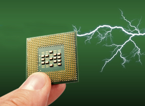
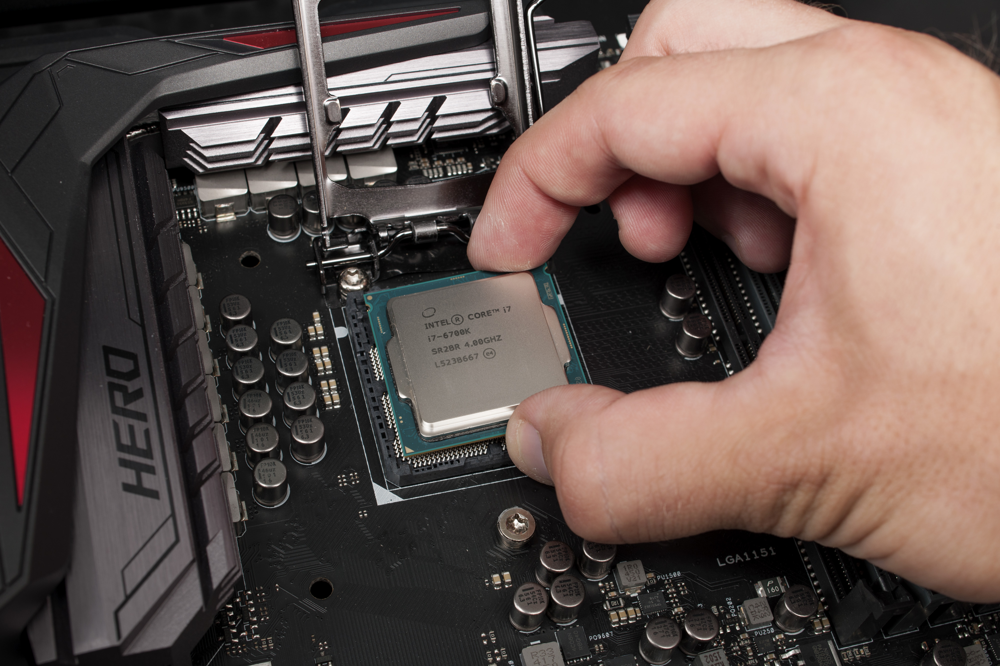
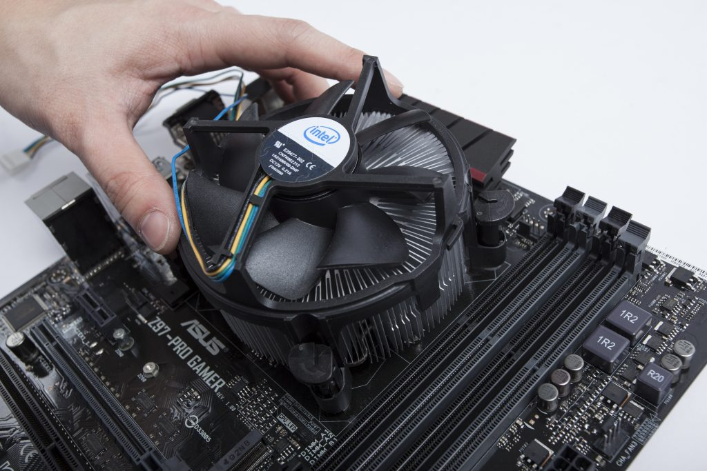
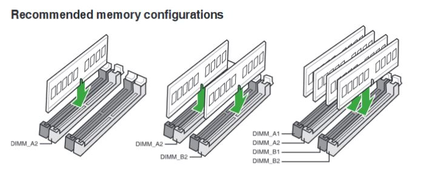
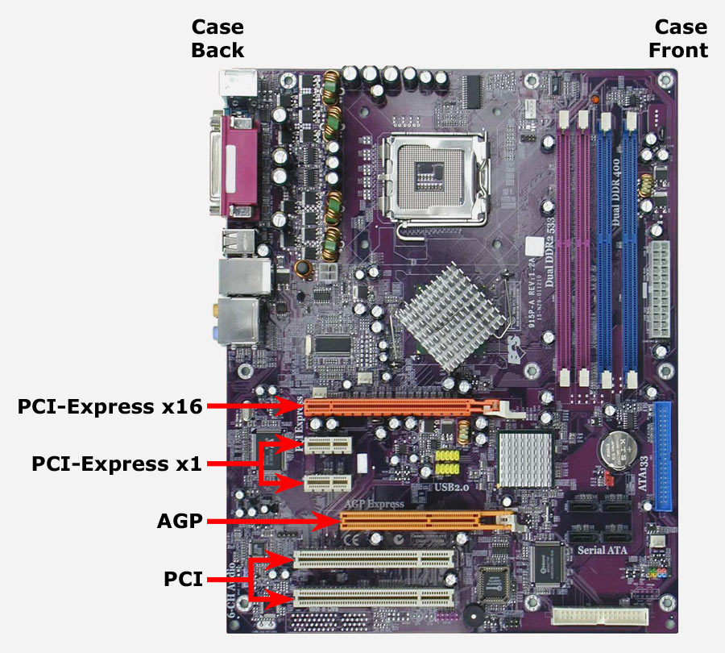

How to assemble
Now here is how we will assemble the computer and will show you step by step and also some precations when building the computer.
ESD
The first thing that should be done in any computer build is find a great place that doesn’t conduct something called ESD. ESD stands for electrostatic discharge or static, and this can be very dangerous to components because it can damage your components without even realizing. Do it in a wooden or marble table, or any other table that doesn’t create static shocks. For examples beds, rugs, sofas, etc. to prevent ESD from producing during your build, you need to have something called antistatic wristband or an anti-static mat. This will help you in eliminating any ESD that you may have. You will have to ground yourself with the end of the alligator clip. If you don’t have any of those two you can touch the computer case as that will also help get rid of any ESD that you have. Now that you are in a good area to work with and a lot of space and you have taken the precaution with ESD we can start the Build.
Step 1: Motherboard & CPU
Place the motherboard onto the table or on top of the anti-static mat and take out the CPU. There is a square spot on the motherboard and what will you have to do is place the CPU in there. There is a small indication on how it is going to be place, there is a small little arrow and you will align it with the arrow that indicates on the motherboard. You do not have to put pressure to place the CPU on the motherboard, doing so may damage the CPU pins. Once you place the CPU onto the motherboard, you will then latch the CPU in place with the little lever that is on the side of the CPU socket. For this you might need to apply a little bit of pressure so that you can lock the CPU in place.
Step 2: CPU Fan
Next comes the CPU fan and with that you can either use the CPU fan that came with the CPU or the one that you have bought. If you bought a CPU fan separate, then follow the instructions that indicates on the box. Otherwise this will be a guide on how to put the stock CPU fan on. But before you do that you will need to apply thermal paste onto the fan. Check on the bottom of the fan, and see if it has thermal paste, if it does then you don’t need to apply any thermal paste. But if you don’t want to have any of the stock thermal paste onto your fan then wipe that off the fan and apply the thermal paste onto of the CPU. A good amount would be the size of a grain of rice maybe a bit more. Just be careful on not putting a lot of thermal paste as it can spill onto the motherboard and that can cause problems like a short circuit. Once you applied thermal paste next we will put the fan, there are for holes on the computer and that is where the CPU fan will latch on. Push the fans legs onto the holes until you here a snap indicating that the leg has latch onto the board, then turn the little notch on the fan to lock it. I suggest doing them diagonally on the legs to get a good lock on the CPU fan. Then once the CPU fan is latched on the motherboard, you can connect the CPU fan on the motherboard, most motherboards will indicate on the board on where you can connect them.
Step 3: RAM
Next up we will be putting the ram onto the motherboard. This is easy, all you must do is align the pins onto the motherboard. Just be careful that some motherboards want to be put on channels to run properly. For example, like the diagram showed on the top. You will align the pins on how the motherboard is align and push down till it feels that is in place. Once you put the ram onto the motherboard, there are two latches on the side and all you must do is push it forward to the ram to lock in in place.
Step 4: Video Card

For those of you who have purchased the video card this will be a guide on how to place it to the motherboard. It is basically the same as the ram, you will have to locate the PCI express x16 slot on the computer on do the same as the ram. Once you place the video card onto the motherboard, there will also be a latch on the side to lock it. You simply press it forward to the video card and it is in place.